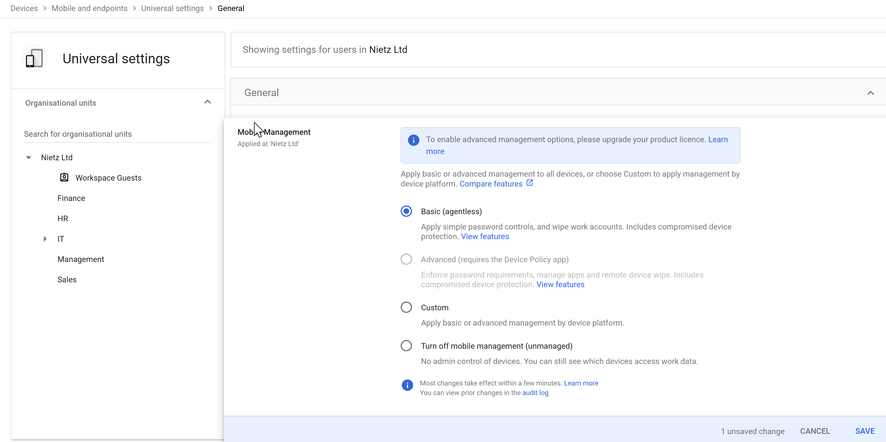
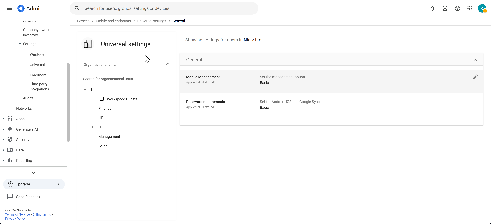
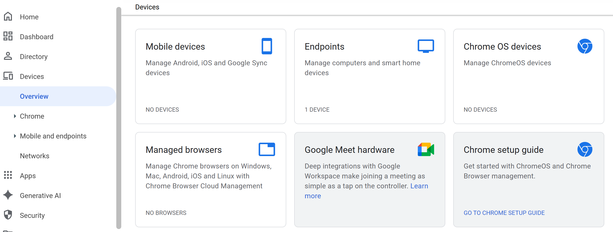

Google Workspace 11: Devices
Basic device management and mobile security controls.
11 – Devices
Overview
Configured Google Workspace device management with a focus on:
Enforcing security policies on mobile devices
Controlling access based on compliance requirements
Monitoring enrolled devices
Validating policy enforcement through real-world testing
The configuration uses Basic Mobile Device Management, suitable for small to medium environments while still enforcing essential security controls.
Device Management Configuration
Mobile device management was configured using Universal Settings.

Configuration
Management level: Basic (agentless)
Scope: Organisation-wide (Nietz Ltd)
Features enabled:
- Account wipe capability
- Basic password enforcement
- Device approval tracking
Configuration Applied
The configuration was saved and applied across the organisation.

Result
Mobile management is active for all users
Devices must comply with security requirements
Admin visibility into connected devices is enabled
Policy Enforcement (2-Step Verification)
A sign-in attempt was made from a device that did not meet the organisation’s 2-Step Verification requirements.

Result
Access was blocked automatically
User was required to meet 2SV requirements before proceeding
Enforces identity-based security policies
Device Enrolment
After meeting the required security controls, the device successfully connected and appeared in the Admin console.

Observations
Device is linked to the user account
Device status: Approved
Ownership: User-owned (BYOD scenario)
Sync activity confirms active usage
Device Inspection
Detailed device information was reviewed within the Admin console.

Available Information
Device ID and resource ID
Operating system (Android 14)
Ownership type (User-owned)
First sync and last sync timestamps
Management level applied
Admin Actions Available
Block device access
Wipe account from device
Delete device from management
View audit information
Devices Overview
The Devices dashboard provides a high-level view of all device categories.

Insights
Separation of device types (mobile, endpoints, ChromeOS)
Visibility into managed vs unmanaged environments
Centralised control for device policies
Key Security Decisions
Implemented Basic Mobile Device Management for simplicity and coverage
Enforced 2-Step Verification integration for access control
Allowed BYOD (user-owned devices) with policy enforcement
Prioritised visibility and control without heavy device management overhead
Validation
The following behaviours confirm correct configuration:
Devices are blocked if they do not meet security requirements
Devices successfully enrol once compliant
Admin console reflects real-time device status and activity
Device-level controls (wipe, block, audit) are available
Real-World Considerations
Advanced management may be required for corporate-owned devices
BYOD environments require strong identity controls (e.g. 2SV)
Device lifecycle management should include onboarding and offboarding processes
Policies should be reviewed as device usage grows
Summary
Evidence covered:
Practical device management implementation
Integration between identity and device security
Real-world policy enforcement and validation
Administrative control over user devices in Google Workspace